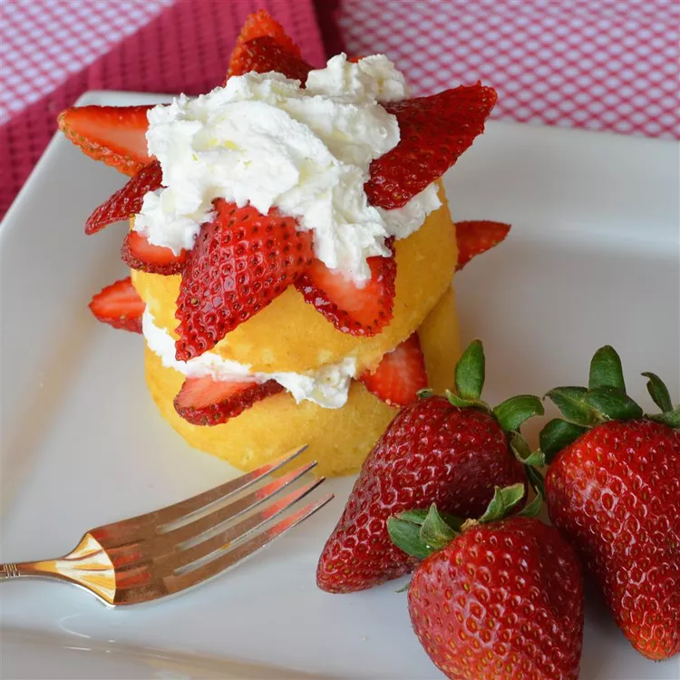

Strawberry Shortcake

Fresh strawberries belong in cake!
This recipe shows you how to make an easy strawberry shortcake that's perfect for a quick dessert. If you love strawberries and shortcake, this recipe is for you!
Ingredients
- 1 quart fresh strawberries, sliced
- ¼ cup white sugar
- 1 (12 ounce) package prepared sponge cake dessert cups
- 1 (7 ounce) can whipped cream, or to taste
Steps
- Place strawberries in a bowl; add sugar and stir to coat. Cover and refrigerate until sugar has dissolved, about 15 minutes.
- Place 1 dessert cup in each serving bowl and smother with strawberries. Top each with whipped cream.